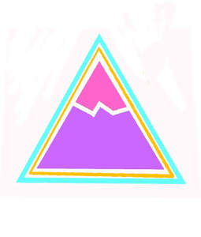

Trade Mark Journal No.2025/010 7 March 2025
UK00004165448 25 February 2025 (9,25)

- Class 9
- Eyewear; Sports eyewear; Eyewear pouches; Eyewear cases; Cases for eyewear; Eyeglasses; Fashion eyeglasses; Sunglass lenses; Lenses for eyeglasses; Sunglasses; Fashion sunglasses; Lenses for sunglasses; Optical lenses for eyeglasses; Protective eyeglasses; Optical lenses for use with sunglasses; Optical lenses for sunglasses; Frames for spectacles and sunglasses; Prescription eyeglasses; Prescription sunglasses; Glasses, sunglasses and contact lenses; Eyeglasses for sports; Frames for sunglasses; Sunglasses frames; Lenses for glasses; Sunglass temples; Optical lenses for spectacles; Eyeglass frames; Chains for spectacles and for sunglasses; Chains for spectacles and sunglasses; Optical glasses; Anti-glare glasses; Protective glasses; Replacement lenses for glasses; Glasses; Sports training eyeglasses; Sunglass cases; Cases for eyeglasses; Fashion spectacles; Straps for sunglasses; Glacier eyeglasses; Sports glasses; Glasses for sports; Cases for sunglasses; Eye glasses; Chains for eyeglasses; Prescription spectacles; Anti-glare spectacles; Goggles; Eyeglass temples; Sunglass cords; Cords for eyeglasses; Goggles for use in sports; Goggles for sports; Sports goggles; Sports (Goggles for -); Chains for sunglasses; Eyeglass lanyards; Anti-reflective lenses; Cords for sunglasses; Motorcycle goggles; Dustproof glasses; Ski goggles; Eyeglass cases; Cases (Eyeglass -); Smart glasses; Sun glasses; Anti-glare visors; Smartglasses; Cases for children's eyeglasses.
- Class 25
- Clothing; Knitwear [clothing]; Jackets [clothing]; Ready-to-wear clothing; Linen clothing; Headbands [clothing]; Gloves [clothing]; Gloves as clothing; Clothes; Jerseys [clothing]; Denims [clothing]; Shorts [clothing]; Cashmere clothing; Leather clothing; Clothing of leather; Hoods [clothing]; Windproof clothing; Embroidered clothing; Belts [clothing]; Belts for clothing; Rainproof clothing; Waterproof clothing; Casual clothing; Visors [clothing]; Jackets being sports clothing; Bottoms [clothing]; Clothing for leisure wear; Ready-made clothing; Trunks being clothing; Leisure clothing; Athletic clothing; Clothing for sports; Sports clothing; Clothing for children; Clothing for babies; Tops [clothing]; Clothing for infants; Weatherproof clothing; Clothing for cycling; Water-resistant clothing; Triathlon clothing; Clothing for skiing; Handwarmers [clothing]; Beach clothing; Thermal clothing; Men's clothing; Fishing clothing.
Always distribution 13 Ltd